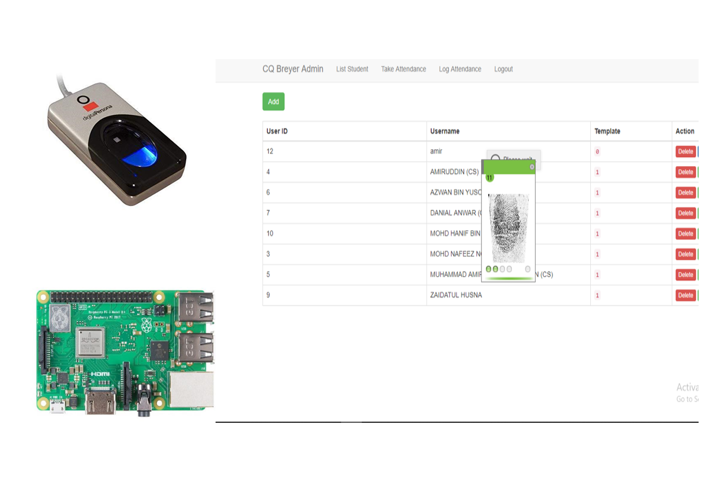

STUDENT ATTENDANCE USING FINGERPRINT
SYSTEM
This system was develop by me to track the student attendance by uisng raspberry pi 3 and Digital persona fingerprint.

- This system was develop by using bootstrap3, HTML5 and CSS for the frontend
- The backend are using raw php 7, mysql and Digtal Persona SDK
- Raspberry Pi 3 as a server. I configure the raspberry pi by using Raspbian OS to make it act as small server
- install apache web server,mysql and php in the raspberry pi 3 before start the code.
- install Fingerspot Flexcode SDK before integrate with web application
- I programmed the system integrate with the SDK so that the web application can grab the fingerprint to the database .
- The module consists of register student, Authenticate student for attendance and monitoring.